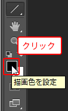
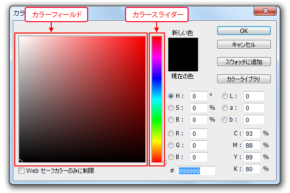
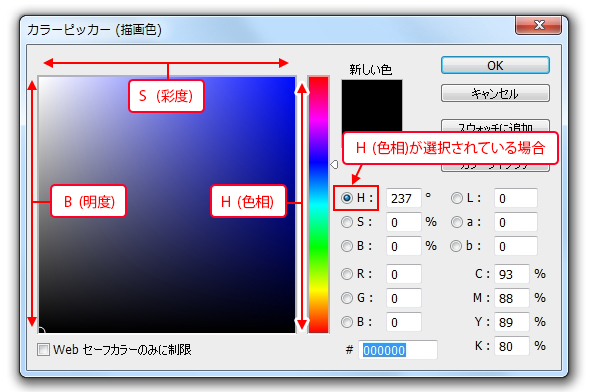

第3章 描画の練習
第1節 色の変更
本項では、カラーピッカーを使用して色の変更を行います。
第4項 カラーピッカーの使用
この項で学習する内容
- [カラーピッカー]を使った色の作成方法を習得する。
カラーピッカー
[カラーピッカー]は、「カラースライダー」と「カラーフィールド」と呼ばれる
色を作成する領域を使い、直感的に色を作成することができるツールです。
「描画色」のカラーピッカーを表示するには、
[カラー選択ボックス]の[描画色]をクリックします。

[カラーピッカー]が表示されます。

カラーピッカーの操作方法
カラーピッカーでは、「HSB」、「RGB」、「Lab」、「CMYK 」の
各カラーモデルの数値を入力して色を指定することができます。
ただ、数値入力による色の作成よりは、直感的に色を作成する方法を取られることが多いツールです。
HSBとは
人間の色知覚に基づいたカラーモデルで、色の三属性である色相(Hue)、彩度(Saturation)、明度(BrightnessもしくはValue)を用いて色を指定します。
Labとは
国際照明委員会によって認定された現在様々な分野で最もポピュラーに使用されている表色系で、輝きの要素（Lightness）に対してa 要素（グリーンからレッドへの軸）と b 要素（ブルーからイエローへの軸）の範囲を指定します。
では、より直感的に色を作成しやすいHSBカラーモデルを基本として色を作成してみましょう。
まずは「H」のラジオボタンをクリックします。
これでHSBカラーモデルのうち、H（色相）を基準として色を作成できるようになります。
「カラースライダー」に「H：色相」が表示されます。
ここでまず、どのような色相の色を作成するかを選択します。
青色のところでクリックしましょう。
「H：色相」の数値が変更されます。
※直感的に色を作成する練習ですので、全く同じ数値である必要はありません。
パネル左側の「カラーフィールド」の表示が、選択した青い色に変わりました。
下図を参考に「カラーフィールド」内をクリックしましょう。
「S：彩度」と「B：明度」の値が同時に変更されました。
ワンポイント
H（色相）を基準とした色の作成では、「カラーフィールド」の横方向がS（彩度）、
縦方向がB（明度）になります。

どのカラーモデルを使用して色を作成しても良いですが、
印刷では出力できない色を指定した場合は、「色域外警告アイコン」が表示されます。
Webセーフカラーとは、過去にコンピュータの環境によって正しく色が再現されなかったため、
どの環境でも必ず同じ色で見えるという216色を選定した色のことです。
現在ではモニターのほとんどがフルカラーを発色できることから、
あまり意識してWebセーフカラーを使用することは少なくなってきています。
この項のまとめ
- カラーピッカーとは
- ・RGB、CMYK、HSB、Labといった様々なカラーモードで直感的に色を作成できるツール。
・[ツールパネル]下部の[カラー選択ボックス]の「描画色」または「背景色」をクリックして表示できる。
- [カラーピッカー]の操作方法
- １：CMYKを除く各カラーモードのラジオボタンから基準となるカラー値を選択する。
２：「カラースライダー」で基準として選んだカラー値の値を設定する。
３：「カラーフィールド」から作成したい色を選択する。
- 色域外警告とは
- ・CMYKのインクまたは、Webセーフカラーで使用できない色を作成した際に表示される。
・警告アイコンをクリックすることで、使用可能な近似色に変更される。
以上でこの節の学習は終了です。
次の節へ進んでください。